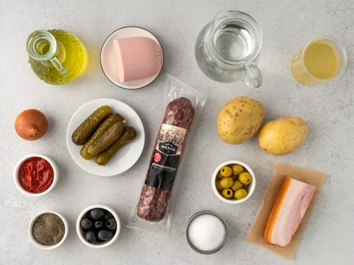
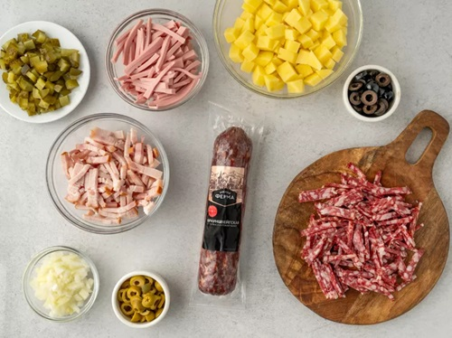
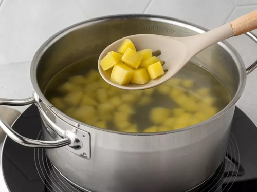
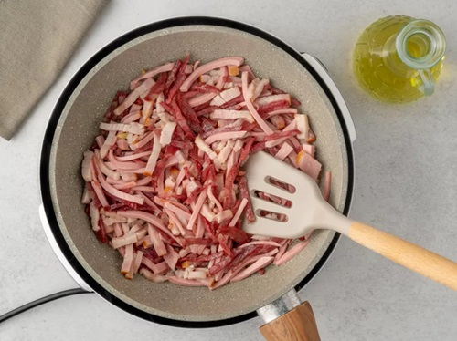
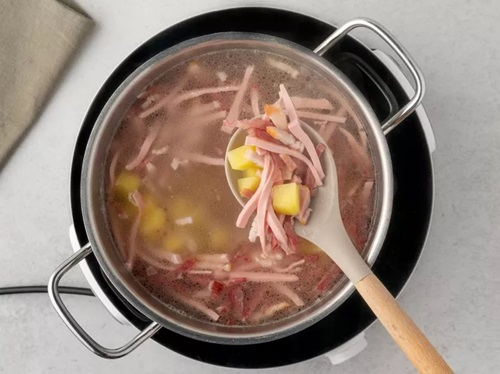
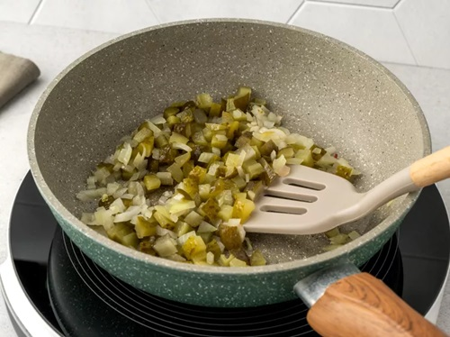
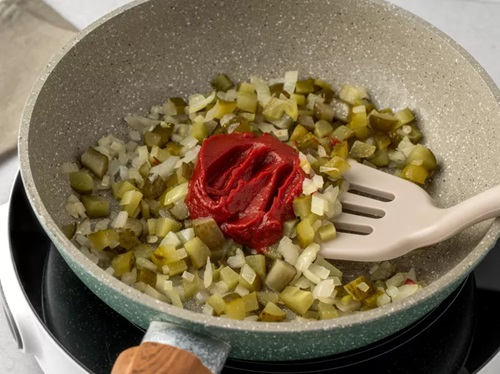
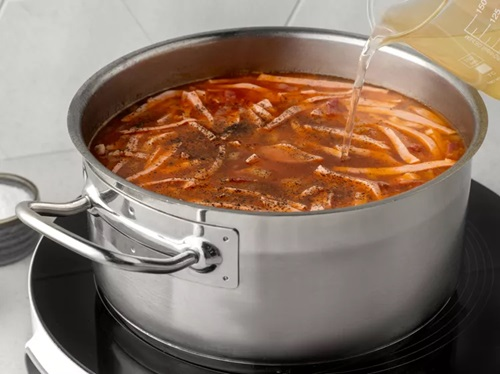
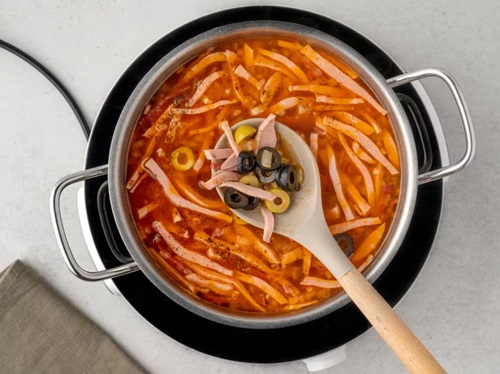
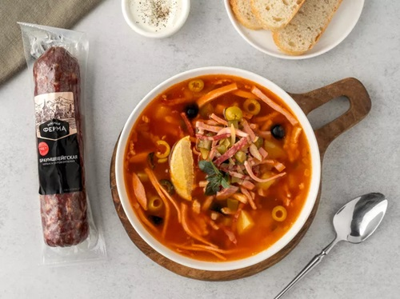

|
|
супы салаты гарниры десерты мои рецепты |
Солянка с маслинами и копченостямиВкусная наваристая солянка получится и без мясного или куриного бульона, если положить в нее обжаренные копченую и вареную колбасу, а также грудинку. Такой суп сварится намного быстрее. Сначала проварите картофель, добавьте копчености, затем лук и соленые огурцы с томатной пастой. Доведите все ингредиенты до готовности, положите маслины и оливки, а потом дайте солянке немного настояться перед подачей. Ингредиенты
ПриготовлениеПодготовкаПомойте и почистите картофель и лук. Снимите оболочку с колбасы. Подготовьте кастрюлю подходящего размера и сковороду. Шаг 1Нарежьте картофель кубиками со стороной 1,5–2 см. Нарежьте грудинку, копченую и вареную колбасу брусочками толщиной 4–5 мм, лук и соленые огурцы — кубиками со стороной 3–4 мм. Порубите колечками маслины и оливки. Шаг 2Налейте воду в кастрюлю, поставьте ее на сильный огонь. Дождитесь, когда вода закипит, опустите в нее картофель. Уменьшите огонь до среднего и варите суп в течение 8–10 минут. Шаг 3Налейте на сковороду 1 ст.л. растительного масла, разогрейте его на среднем огне. Положите в него нарезанную грудинку, вареную и копченую колбасу. Обжарьте их, помешивая, в течение 5–6 минут до румяной корочки. Шаг 4Уберите из кастрюли с водой и картофелем образовавшуюся белую пену. Выложите в суп обжаренные мясные продукты. Дайте бульону закипеть и проварите его еще 4–5 минут. Шаг 5Добавьте на сковороду еще 1 ст.л. масла. Дождитесь, когда оно нагреется. Обжарьте в нем лук, постоянно помешивая, 2–3 минуты до золотистого цвета. Положите соленые огурцы. Пожарьте овощи вместе, перемешивая, еще 1– Шаг 6Заправьте овощи в сковороде томатной пастой. Прогрейте все, периодически размешивая, около 2 минут. Выложите смесь в кастрюлю с супом, все перемешайте. Шаг 7Налейте в кастрюлю огуречный рассол, дайте жидкости закипеть. Поварите суп еще 4-5 минут, всыпьте соль и черный перец, перемешайте. Шаг 8Положите в кастрюлю с супом нарезанные маслины и оливки. Размешайте и подождите, когда суп снова закипит. Выключите огонь под кастрюлей, накройте ее крышкой и оставьте солянку настояться в течение 10–15 минут. ПодачаРазлейте солянку по глубоким порционным тарелкам, положите в каждую ломтики лимона и маринованные каперсы. |
| © рецепты без лишних слов |